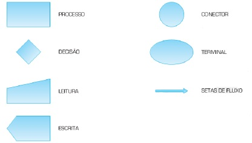
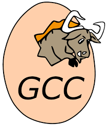
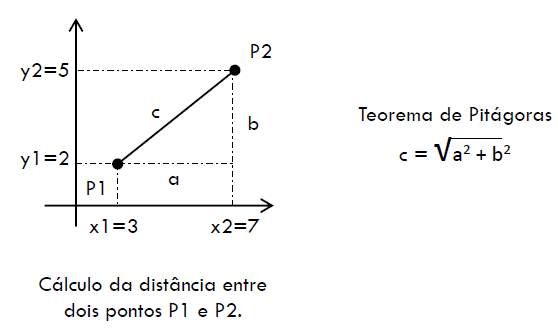

Estrutura Sequencial
Created by Fernando Marques
Fluxograma
- 
- Façam um fluxograma para contar quantas cartas tem em um baralho
Curiosidade C
- É a linguagem mais usada para criar softwares
- É a linguagem mais usada para criar jogos
- É a linguagem que está por trás da internet
- É a linguagem usada para escrever Sistemas Operacionais
- É usada para escrever quase todas as outras linguagens
- Pode ser usada para qualquer processador existente, de relógios e telefones a aviões e satélites
- Pode ser usada embutida em pequenos dispositivos como o Arduino
- É a linguagem preferida pelos hackers
Conceito de programa
- É um algorítimo descrito em uma linguagem de programação
- Em linguagem C temos:
- Comentários
- Função Principal
- Variável (declaração e atribuição)
- Exibição de dados
- Leitura de dados
- Operadores aritméticos, relacionais e lógicos
- Palavras reservadas
- Estruturas sequenciais, condicionais e de repetição
Criação de programas e compiladores
- Análise nessa etapa compreendemos o problema em questão. Entrada, processamento e saída.
- Projeto: elaborar um algoritmo que descreva, passo a passo, proceder para solucionar o problema
- Implementação: Codificar um programa correspondente com o algoritmo
- Teste: Executar o programa e verificar como ele se comporta
Compiladores
- Um compilador é um programa que interpreta os comandos escritos em uma linguagem de programação e os converte em uma forma que o computador entende
- Em geral existem vários compiladores diferentes para uma mesma linguagem
- O compilador que usamos é o GNU GCC Compiler
- GNU significa: GNU is Not Unix

Paradigmas de programação
- Paradigma estruturado
- Qualquer problema pode ser quebrado em problemas menores
- Podemos chamar os problemas menores de sub-rotinas ou funções
- O processamento pode ser realizado pelo uso de três tipos de estruturas de controle
- Estrutura de controle sequencial
- Condicional
- Iterativa (repetição)
Programação Estruturada
- Sequencia: permite indicar dois ou mais passos que devem ser executados sequencialmente, na ordem em que estão especificados
- Seleção: permite indicar dois passos que devem ser executados de forma mutuamente exclusiva, dependendo de uma determinada condição
- Repetição: permite indicar um ou mais passos que devem ser executados repetidamente, dependendo de uma condilçao
Operadores e funções
| Operador | Exemplo | Comentário |
| = | x =y | Conteúdo da variável x é atribuído a y |
| + | x+y | Soma conteúdo de x e y |
| - | x-y | Subtrai o conteúdo de y do conteúdo de x |
| * | x*y | Multiplica o conteúdo de x pelo de y |
| / | x/y | Obtém o quociente da divisão de x por y (inteiro vs float) |
| % | x % y | Obtém o resto da divisão de x por y |
Operadores matemáticos de atribuição
| Operador | Exemplo | Equivalente |
| += | x += y | x = x + y |
| -= | x -= y | x = x - y |
| *= | x *= y | x = x*y |
| /= | x /= y | x = x / y |
| %= | x %= y | x = x % y |
| ++ | x++ | x = x + 1 |
| ++ | x = y++ | y = x e depois x = x+1 |
| ++ | x = ++y | x = x=1 e depois y = x |
| -- | x-- | x = x -1 |
Operadores relacionais ou comparativos
| Operador | Exemplo | Comentário |
| == | x == y | x é igual a y |
| != | x != y | x é diferente de y |
| <= | x <= y | x é menor ou igual a y |
| >= | x >= y | x é maior ou igual a y |
| < | x < y | x é menor que y |
| > | x > y | x é maior que y |
Funções da biblioteca math.h
| Exemplo | Comentário |
| ceil(x) | Arredonda 3.2 é 4 |
| cos(x) | Cosseno em radianos |
| abs(x) | Valor absoluto -1 é 1 |
| floor(x) | Arredonda para baixo, 3.2 é 3 |
| log(x) | Logaritmo natural |
| log10(x) | Logaritmo na base 10 |
| pow(x,y) | Potência de x elevado a y |
| sin(x) | Seno de x em radianos |
| sqrt(x) | Raiz quadrada de x |
| tan(x) | Tangente de x em radianos |
Exercícios
- Dada as coordenadas de dois pontos no plano cartesiano, informa a distância entre eles
- 
- Dada uma distância percorrida (em quilômetros),bem como o total de combustível gasto(em
litros), informe o consumo médio do veículo emkm/l.
Exercícios
- Dadas as medidas de uma sala em metros, bem com o preço do metro quadrado de carpete, informe o custo total para forrar o piso da sala
- Faça um programa que leia o peso e altura de uma pessoa e retorna o IMC da mesma
- Preencher a enquete Avaliação de Um Minuto